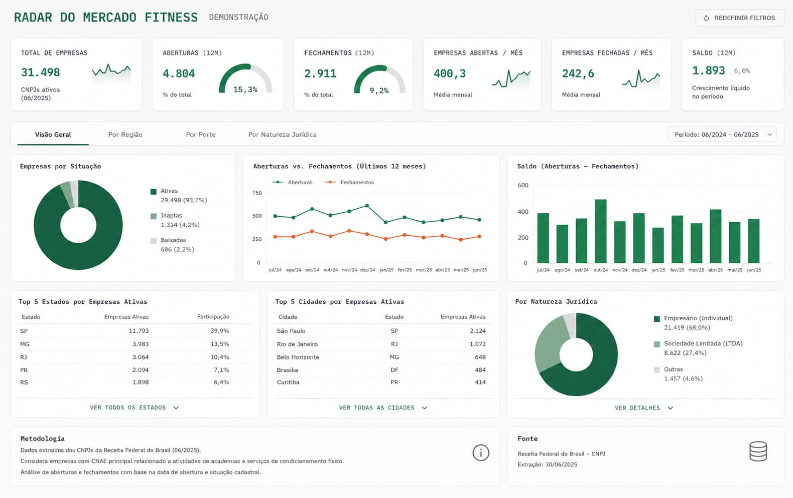

radar_fitness Estudo de mercado com dados públicosMarket study with public data
A Receita Federal publica o cadastro completo de CNPJ do país, mais de 60 milhões de estabelecimentos. Este estudo filtra os que têm CNAE principal de academia (9313-1/00, atividades de condicionamento físico) e cruza com a população estimada pelo IBGE para responder quatro perguntas: quanto o mercado cresce, quanto tempo uma academia vive, quando elas abrem e onde ainda há espaço.
Brazil's federal revenue service publishes the country's full business registry, over 60 million establishments. This study filters the ones whose primary activity code is gym and fitness services (CNAE 9313-1/00) and joins them with IBGE population estimates to answer four questions: how fast the market grows, how long a gym lives, when they open, and where there is still room.
Foto da base de . Todos os números vêm do pipeline em Python deste repositório e podem ser reproduzidos com um python main.py.
Registry snapshot from . Every number comes from this repository's Python pipeline and can be reproduced with python main.py.
O estudo reproduzível vive no pipeline em Python, mas quem acompanha mercado no dia a dia precisa de um painel. Este dashboard em Power BI entrega a visão de gestão sobre a mesma base: KPIs dos últimos 12 meses, aberturas contra fechamentos mês a mês, saldo líquido, ranking de estados e cidades e recortes por região, porte e natureza jurídica, com filtro de período. The reproducible study lives in the Python pipeline, but tracking a market day to day calls for a dashboard. This Power BI dashboard delivers the management view on the same base: trailing 12-month KPIs, openings versus closures month by month, net balance, state and city rankings, and breakdowns by region, size and legal nature, with a period filter.

Academias abertas e baixadas por ano no Brasil inteiro. A data da baixa é a da situação cadastral, então anos com mutirão de baixa na Receita aparecem como picos de fechamento. Gyms opened and closed per year across Brazil. The closing date is the registry status date, so years when the revenue service ran cleanup sweeps show up as closure spikes.
Cada barra é a turma de academias abertas naquele ano e a fatia dela que continua ativa na foto atual do cadastro. Turmas novas ainda não tiveram tempo de morrer, então a leitura honesta é comparar turmas com a mesma idade em estudos futuros. Each bar is the cohort of gyms opened that year and the share still active in the current registry snapshot. Young cohorts have not had time to die yet, so the honest reading compares same-age cohorts in future studies.
Fatia das aberturas por mês do ano, somando 2016 a 2025. A intuição do setor aposta em janeiro, pela promessa de ano novo. O cadastro conta outra história: janeiro fica perto da média, o vale é dezembro e o pico de abertura de CNPJ vem depois, no meio do ano. Share of openings by month of the year, 2016 through 2025 combined. Industry intuition bets on January and its new year's resolutions. The registry tells another story: January sits near the average, December is the trough, and the peak in new registrations comes later, mid-year.
Academias ativas por 100 mil habitantes. O interior rico e as capitais de porte médio puxam a fila; os extremos da lista dizem onde a concorrência é dura e onde a demanda ainda espera oferta. Active gyms per 100k inhabitants. Wealthy countryside and mid-size state capitals lead; the two ends of the list say where competition is fierce and where demand still waits for supply.
Entre cidades com 100 mil habitantes ou mais: as que têm mais academias em número absoluto, as mais servidas por 100 mil habitantes e as menos servidas. A última coluna é a que interessa para expansão. Among cities of 100k+ inhabitants: the ones with the most gyms in absolute numbers, the best served per 100k, and the least served. The last column is the one that matters for expansion.
Fonte. Dados abertos de CNPJ da Receita Federal, arquivos de estabelecimentos, filtrados pelo CNAE principal 9313-1/00 em streaming, um zip por vez. População por município da estimativa 2025 do IBGE (agregado 6579). O cruzamento é por nome de município normalizado mais UF, porque a Receita usa código próprio de município.
Limites que valem a pena conhecer. CNPJ ativo não garante academia em operação, e muitos estúdios pequenos operam como MEI em outros CNAEs ou sem CNPJ. A data de baixa é a da situação cadastral, que pode vir bem depois da porta fechar, e mutirões de baixa da Receita criam picos artificiais de fechamento em anos específicos. Os números medem o cadastro, que é o melhor espelho público do mercado, mas ainda um espelho.
Source. Brazil's federal revenue service CNPJ open data, establishment files, filtered by primary CNAE 9313-1/00 in streaming, one zip at a time. Municipal population from IBGE's 2025 estimate (aggregate 6579). The join uses normalized city name plus state, because the registry uses its own municipality code.
Limits worth knowing. An active registration does not guarantee an operating gym, and many small studios run as micro-entrepreneurs under other activity codes or with no registration at all. The closing date is the registry status date, which can lag the actual shutdown, and registry cleanup sweeps create artificial closure spikes in specific years. These numbers measure the registry, which is the best public mirror of the market, but still a mirror.